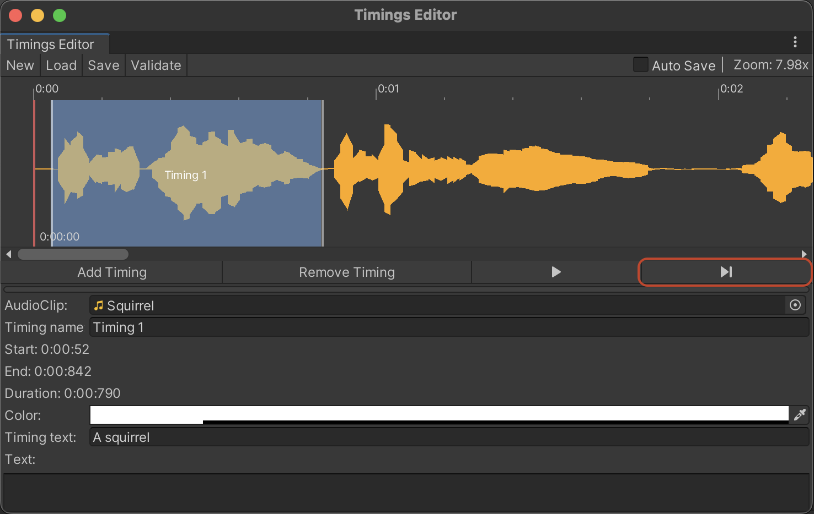
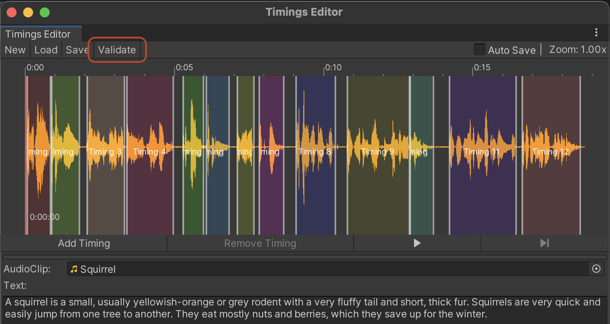
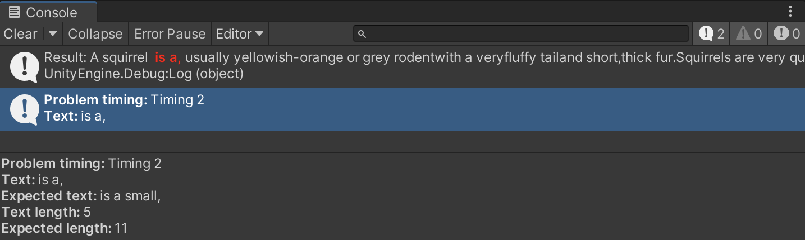

Create dialogues, subtitles, karaoke, interactive books, or any other text effects synchronized with playing audio using this asset!
For the correct work, «Audio-Text Synchronizer» requires:
First, back up your project.
Next, update the asset to the latest version from Asset Store using Package Manager (Window -> Package
Manager).
The asset has a comparison list of APIs with changes. To check it, open the v.2.0_API_Changes.pdf file.
Also, check out this section: Upgrading from version 1.x to 2.x.
If you have any issues or errors, contact me. I'll be happy to help!
«Audio-Text Synchronizer» contains two parts:
For text and audio synchronization, you need to create timings of AudioClip, add the TextSynchronizer component, and setup its parameters.
To create timings user can open Timings Editor from «Window -> Audio Text Synchronizer -> Timings Editor» or create
PhraseAsset using menu Assets/Audio Text Synchronizer/Audio Timings and open it using double-click:
You can choose the AudioClip from the window using the AudioClip field:
After that Timeline of the current AudioClip is displayed:
A red vertical line on the left of the timeline is a cursor of the current position of playing audio.
By double-clicking on the timeline user can move the cursor. At the bottom of the cursor is the current audio time position.
Let's look at the elements of the window:
Let’s add timings to the timeline. To add timing, click the button or the right mouse button and choose the item «Insert new timing».
Timing will be added to the current cursor position on the timeline:
New timing will be added and selected. At the bottom of the window, you can find information about new timing.
This box contains information about «Timing name», «Start» position of timing, «End» position of timing, «Duration» of timing,
«Color» of timing, and «Timing Text» - text, which timing contains.
Now let’s add text to timings and move them to the correct positions. To change the timing duration, drag-n-drop timing left and right borders.
For example, let's resize this timing in that way: start position at 0.0052 sec, end position at 0.0842 sec, and add the text «A squirrel»:
To make sure that it’s correct, press the button «Play Selected Timing» to play the AudioClip segment:

In this way, add timings for all AudioClip timeline. It is also possible to choose a Color and Name of timings for convenience. Note that setting up the
Color and Name is unnecessary and displays only in Timings Editor. To select many timings and move them, use the selection rectangle by mouse:
Also, Timings should contain the main text at the bottom of the Window - it is the whole text of AudioClip:
After finishing work with timings, timings can be saved in the file using the button .
Timings Editor will ask to choose a filename and path, where the timings asset will be saved:
For loading timings from the file, double-click with the left mouse button on the timings asset (PhraseAsset), or select the timings asset and press button:
To resize timeline height, you can drag-n-drop slider:
Saved Timings can be displayed in the Inspector Window. You can edit it in Inspector instead of Timings Editor:
Timings can be separated by word or characters. User can divide audio on timing as necessary. For better synchronization accuracy,
add the appropriate number of timings. It is recommended to add timings to phrases or words, depending on AudioClip.
Timings can be generated automatically using whisper.unity package.
It provides high-performance inference of OpenAI's Whisper automatic speech recognition
(ASR) model running on your local machine (no internet required).
This works with 90+ languages and require
Whisper model weight. The smallest model means worse quality of automatic speech recognition
but works faster compared to other models. The bigger model size means better quality but works slower and
uses more memory. Using «whisper.unity», you can generate timings in runtime,
and recognize text using microphone record.
To install «whisper.unity», open «Window -> Audio Text Synchronizer -> Whisper Installer»:
Press button to install «whisper.unity» package. It will download and install the latest compatible version from the
github. The progress of the installation will be displayed in the Console tab.
Please note that I added ability to use «whisper.unity» in «Audio-Text Synchronizer», but I cannot guarantee flawless performance and work of «whisper.unity» package. Using the «whisper.unity» package is optional.
Timings Validation - it’s functional that helps to validate timings text corresponding main text of the audio clip. After validation,
it reports if there are problems with timings to the «Console» window. To use it, fill timings with corresponding text and
press button in the left top corner of the «Timings Editor» window:


From the message, we can see that concatenation of all timings text doesn't match with all timings text and the second timing has less length than
expected. Now we can fix the text of the second timing and validate it to be sure that it is correct:
TextSynchronizer is the main runtime script of the asset.
TextSynchronizer component gets the current position of AudioSource playing, finds the appropriate timing, and sends the
data (current timing, percent of finish of current timing) to TextEffectBase class. It also requires GameObject with Text component and works using
System.Reflection, which allows to use of custom Text components. So, you need to choose a GameObject, Component and Property name from the dropdown list and the Text Effect.
To start working, add the component TextSynchronizer to some GameObject.
The next step is to choose a GameObject, Component, or Property of the text component.
If your scene doesn't have a text component, create a new GameObject and add UI.Text or
TextMesh Pro component:
Note that if you use RTL (right to the left) text, you need to check "Enable RTL Editor" in the TextMeshPro component parameters.
Then set AudioSource with AudioClip, Phrase Asset (timings), and add Text Effect:
That's all, your TextSynchronizer component is ready. Note that AudioSource should play for synchronization.
Text Effect - is ScriptableObject that contains the logic for modifying text components during synchronization.
Asset has two type of text effects: Rich and Mesh text effect.
1. Rich Effect (Assets/AudioTextSynchronizer/TextEffects/Rich/RichTextEffect.asset) uses RichText that markups format for text highlighting.
RichText can provide such features as changing text color, bolding text, resizing, etc. Rich Effect parameters:
2. Mesh Effect (Assets/AudioTextSynchronizer/TextEffects/Mesh/MeshTextEffect.asset) - the effect that uses text component mesh data - position, UV, color, etc. Mesh Effect parameters:
To create a custom effect, create a class that inherits from «TextEffectBase» class and create a ScriptableObject. See the «RichTextEffect» and «MeshTextEffect» classes to understand better how it works.
Text Split Config (Text Splitter) is a ScriptableObject that contains the logic of text splitting by text parts.
Using Text Splitter, you can choose how to display text: all timings text, per timing, or separated by strings.
Asset has tree type of text splitters:
Text Highlight Config (Text Highlighter) is a ScriptableObject that contains the logic of text highlighting. For example, with Text Highlighter, you can choose how to highlight text: per each character, per timing, or separated by strings.
Timing class contains timing data:
public float StartPosition - start position on the timeline in seconds;
public float EndPosition - end position on the timeline, in seconds;
public string Name - the name of timings, used by Timings Editor;
public string Text - the text which contains timing;
public Rect Rectangle - rectangle, used by Timings Editor;
public Color Color - the color of the current rectangle, used by Timings Editor;
public float Size - duration of timing in seconds.
PhraseAsset class – it is ScriptableObject that contains timings data:
public AudioClip Clip - AudioClip, which will be used to synchronize timings;
public string Text - Text of AudioClip;
public List<Timing> Timings - a list of Timings.
TextSynchronizer component synchronizes text effect with AudioSource.
Main public fields, properties, and methods:
public GameObject GameObjectWithTextComponent { ... } - GameObject, for which effect will be applied, should contain text component;
public Component TextComponent { ... } - text component, for which effect will be applied;
public AudioSource Source { ... } - AudioSource to synchronize text effect with audio playing;
public PhraseAsset Timings { ... } - reference to the asset with timings;
public TextEffectBase TextEffect { ... } - reference to the TextEffect asset, which be applied to text component;
public bool IsRunning { ... } - whether to sync is active;
public event Action OnSyncFinished - event that will be invoked after the synchronization is finished;
public event Action <string, int> OnWordReached - event that will be invoked when word reached while synchronization, second argument - index (position) of the word in the text;
public void Play(bool initializeEffect = false) - run synchronization, optional argument - whether to initialize the effect;
public void Pause() - pause synchronization;
public void Stop(bool resetCurrentTiming = true) - stop synchronization, optional argument - whether to reset current timing;
public void SkipPhrase() - skips current timing/text part;
public void SplitWords() - get all words from phrases asset main text;
public int GetCharProgress() - return index of text before current timing text;
public int GetCharProgress(char[] trim) - return index of text before trimmed current timing text.
TextEffectBase base class of the text effect that interacts with text component while AudioSource is playing. Using this base class, you can create new text effects;
Main public fields, properties, and methods:
public event Action<Timing> OnTimingEnter - event, invokes when audio is playing, and TextSynchronizer sets the new timing (previous timing finished);
public event Action<Timing> OnTimingStart - event, invokes when audio is playing and TextSynchronizer the new timing starts playing;
public event Action<Timing, float> OnTimingProgress - event, invokes when audio is playing, and timing is in sync, second argument - progress of current timing from 0 to 1;
public event Action<Timing> OnTimingEnd - event, invokes when audio playing of current timing is finished;
protected TextSynchronizer TextSynchronizer - reference to TextSynchronizer component;
public virtual void Init(TextSynchronizer textSynchronizer) - initialize the effect, argument - TextSynchronizer instance;
public virtual void OnTimingEntered(Timing timing) - invoke when audio is playing, and TextSynchronizer sets the new timing (previous timing finished);
public virtual void OnTimingStarted(Timing timing) - invoke, when audio is playing and TextSynchronizer the new timing starts playing;
public virtual void OnTimingMoving(Timing timing, float progress) - invoke when audio is playing, and timing is in sync, second argument - progress of current timing from 0 to 1;
public virtual void OnTimingFinished(Timing timing) - invoke, when audio playing of current timing is finished;
public virtual void OnEffectFinished() - invoked when the effect is finished;
protected virtual void SetTextToComponent(string text) - sets text to text component;
protected virtual void SkipPart() - skip current timing/text part.
MeshTextEffect - the effect that uses text component mesh data - position, UV, color, etc. It is used to change the mesh of UI.Text and TextMeshPro components;
Main public fields, properties, and methods:
public MeshAnimationBase MeshAnimation - reference to the MeshAnimation;
public int CharIndexOffset - highlight position offset in characters count;
public bool AnimateTextInstantly - whether to animate the text part instantly. If unchecked, the text will be animated according to the TextHighlighter config;
public OnTextPartAction TextPartFinishedAction - an action that will be performed after text part finish: Clear Text or Set Current Part Text.
TextRichEffectBase class sends data for effects while AudioSource is playing. It is used for rich text effects, which are supported by many assets with custom text components;
Main public fields, properties, and methods:
public string StartTag - tag, which inserted to text component;
public string EndTag - tag, which closes the StartTag;
public Color32 HighlightColor - highlighting color;
public int CharIndexOffset - highlight position offset in characters count;
public OnTextAction EffectFinishedAction - an action that will be performed after effect finish sync: None, Clear Text, or Set Current Part Text.
Pause synchronization:
[SerializeField] private TextSynchronizer textSynchronizer; //assign reference to the TextSynchronizer component in the Inspector
...
textSynchronizer.Pause();
Play/Resume synchronization:
[SerializeField] private TextSynchronizer textSynchronizer; //assign reference to the TextSynchronizer component in the Inspector
...
textSynchronizer.Play();
Stop synchronization:
[SerializeField] private TextSynchronizer textSynchronizer; //assign reference to the TextSynchronizer component in the Inspector
...
textSynchronizer.Stop();
Change timings in runtime:
[SerializeField] private TextSynchronizer textSynchronizer; //assign reference to the TextSynchronizer component in the Inspector
[SerializeField] private PhraseAsset timings; //assign reference to the PhraseAsset asset in the Inspector
...
textSynchronizer.Timings = timings;
Subscribe to the synchronization complete event:
[SerializeField] private TextSynchronizer textSynchronizer; //assign reference to the TextSynchronizer component in the Inspector
...
textSynchronizer.OnSyncFinished += OnSyncFinished;
...
private void OnSyncFinished()
{
Debug.Log("Synchronization finished!");
textSynchronizer.OnSyncFinished -= OnSyncFinished;
}
Subscribe to the synchronization word reached event:
[SerializeField] private TextSynchronizer textSynchronizer; //assign reference to the TextSynchronizer component in the Inspector
...
textSynchronizer.OnWordReached += OnWordReached;
...
private void OnWordReached(string word, int position)
{
Debug.Log($"Reached word: {word} at position {position}");
if (word == "SomeWord")
{
Debug.Log("SomeWord reached!");
textSynchronizer.OnWordReached -= OnWordReached;
}
}
Subscribe to the text effect progress event:
[SerializeField] private TextSynchronizer textSynchronizer; //assign reference to the TextSynchronizer component in the Inspector
...
textSynchronizer.TextEffect.OnTimingProgress += OnTimingProgress;
...
private void OnTimingProgress(Timing timing, float progress)
{
Debug.Log($"Timing text: {timing.Text}, progress: {progress}");
}
Generating timings using «whisper.unity» in runtime:
#if WHISPER_UNITY
using AudioTextSynchronizer.Whisper;
using Whisper.Utils;
#endif
...
[SerializeField] private TextSynchronizer textSynchronizer; //assign reference to the TextSynchronizer component in the Inspector
[SerializeField] private AudioClip audioClip; //assign reference to the AudioClip component in the Inspector
#if WHISPER_UNITY
private WhisperHelper whisper;
#endif
...
private async Init()
{
#if WHISPER_UNITY
whisper = new WhisperHelper();
await whisper.LoadModel();
#endif
}
...
GenerateFromClip(audioClip);
...
private async void GenerateFromClip(AudioClip clip)
{
#if WHISPER_UNITY
var phraseAsset = await whisper.GenerateTimings(clip);
textSynchronizer.Stop();
textSynchronizer.Timings = phraseAsset;
textSynchronizer.Source.clip = phraseAsset.Clip;
#endif
}
Starting from version 2.x, Text Effects were rewritten from scratch and isn't compatible with effects from version 1.x. If you update an asset in the project that already has 1.x version, please do the following steps to make the asset work properly: